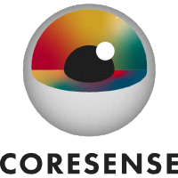

TB1
Manufacturing
Flexibility of manufacturing robots in changing assembly tasks.

CoreSense is a Horizon Europe research project that develops a theory of understanding and awareness for autonomous robots, and a cognitive architecture that implements it on top of ROS 2. Its goal is to improve the capability of robots to understand their open environments and complex missions, leading to improved flexibility, resilience and explainability.
The core of the project is a hybrid cognitive architecture that uses knowledge as the core substrate for its operation and is self-aware, trustworthy, model-centric and value-oriented. The theory and technology are released as a reference architecture and an engineering toolbox, and the project builds an open-source community in the ROS ecosystem around them.
Flexibility of manufacturing robots in changing assembly tasks.
Resilience of autonomous drone teams, e.g. in solar plant inspection.
Human alignment of social robots. Led by URJC, including the RoboCup@Home implementation CoreSense4Home.
All CoreSense software is open source in the CoreSense GitHub organisation. Some highlights:
CoreSense has received funding from the European Union’s Horizon Europe research and innovation programme under grant agreement No 101070254. Views and opinions expressed are however those of the author(s) only and do not necessarily reflect those of the European Union or the European Commission. Neither the European Union nor the granting authority can be held responsible for them.